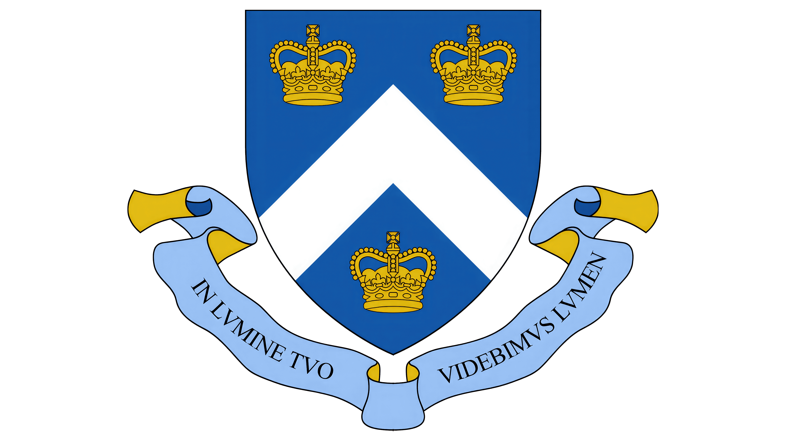
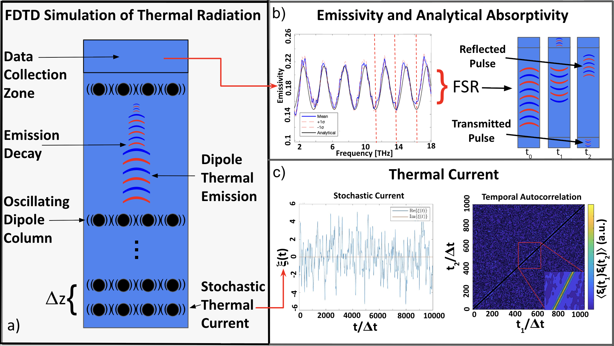
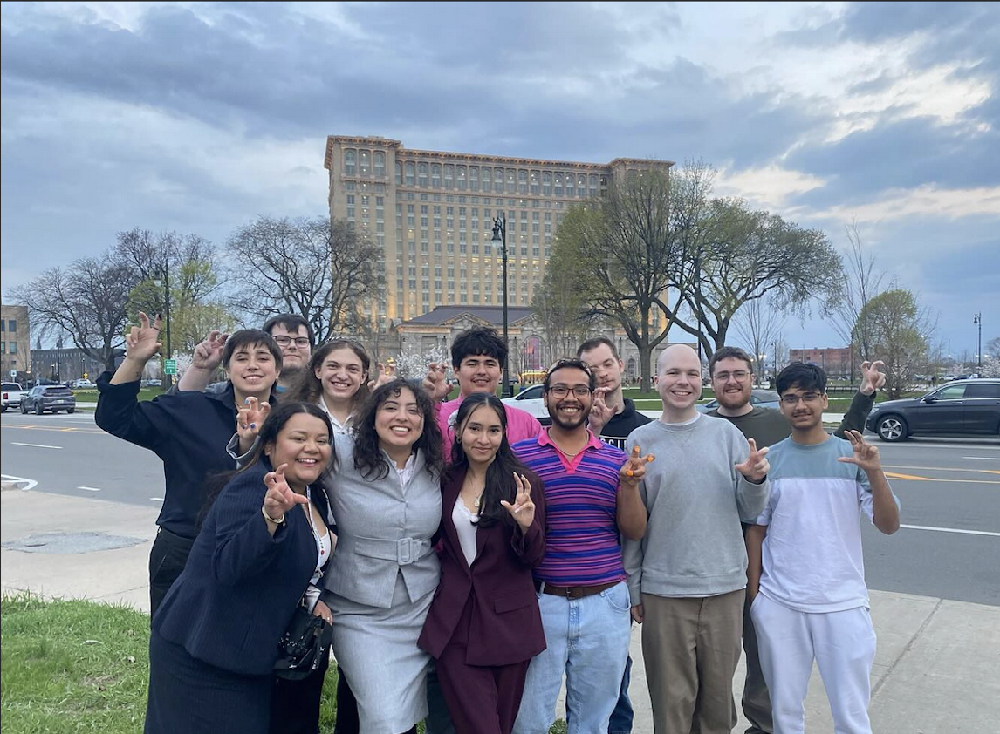

Naren Ganesh
Electrical Engineering @ Columbia • Researcher • Debater
Education

Columbia University
Electrical Engineering
Photonics • EM • Nano systems
Photonics • EM • Nano systems
Texas Academy of Math & Science
Early college program • Research leadership
Experience
Research Fellow — UNT Physics
Aug 2024 – Present
Non-equilibrium thermal radiation research, computational EM.
President — TAMS Research Organization
Apr 2025 – Present
Led student research initiatives, mentorship, project coordination.
What am I doing?
- 1D Finite-Difference Time-Domain simulations of thermal currents
- 2D/3D COMSOL modeling using Green’s functions
- Photonic time crystal research
- Non-equilibrium radiation and coherence amplification
- Energy transport in nanoscale photonic systems


What am I running?
Lincoln-Douglas debate focused on:
- Critical legal theory
- Continental philosophy
- International relations frameworks
- Structural injustice analysis
Achievements:
- Quarterfinalist — WKU Spring Showcase
- 3rd Speaker Award
- NFA-LD Nationals Qualification
